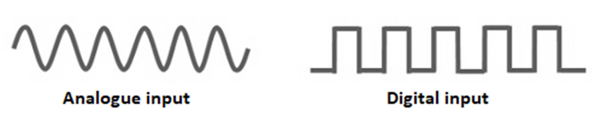

Section A
Short Answer Questions
30 marks
Answer any six questions.
Question 1
Choose the appropriate Python data type from the following list and place it in Column B to match the variable assignments in Column A.
Float, Boolean, Integer, String, List
| Variable Assignment (Column A) | Data Type (Column B) |
|---|---|
| a = 5 | Integer |
| b = "Hello World" | String |
| c = True | Boolean |
| d = ["apple", "banana", "orange"] | List |
| e = 2.718 | Float |
Question 2
Convert the binary number 1101 to a decimal number.
| 128 | 64 | 32 | 16 | 8 | 4 | 2 | 1 |
| 1 | 1 | 0 | 1 |
1 + 4 + 8 = 13
Question 3
Unicode and the American Standard Code for Information Interchange (ASCII) are both character sets used for encoding and decoding messages. Identify one advantage of using Unicode rather than ASCII.
Unicode is a much larger encoding standard. It includes over 149,000 characters. It covers most of the world's writing systems, including ASCII, as well as symbols and emojis. ASCII is a character encoding system that only includes up to 256 characters, primarily composed of English letters, numbers, and symbols. It uses up to eight bits to represent each character.
Question 4
The image in Figure 1 shows drones operating inside a modern warehouse full of goods. This is one example of how computing technology can help automate processes. Give another example of how computing technology can be used to automate a process and explain one benefit provided by your example.
The toll bridge on the M50 motorway is a good example of how an automated process can be beneficial. It is a much faster system. The traffic doesn't need to stop to pay the toll, so it doesn't cause a traffic jam. And it's also much cheaper because staff don't need to be paid to collect money from drivers.
Queston 5
The image in Figure 2 depicts a client‐server model over the Internet. Provide one practical example of how a client‐server model is used in our daily interaction with technology.

When we use a browser like google to search for a website, the client (the user's computer) sends the request to a server. A server sends the client a list of appropriate search results and then the client can access the website. The resources needed for a website, such as the HTML, CSS and javascript files, images, videos and other resources, are stored on a server. When you click the link to access the website, another request is sent to the server, and the website is displayed on the client's computer.
Question 6
(a) Answer the following question by putting a tick in the relevant box.
Tick one box only.
What is HTTP?
(b) Describe one difference between the World Wide Web (WWW) and the Internet.
The world wide web are the media content such as webpages, images, videos and so on, that are stored and made available by the internet. The internet is the infrastructure that connects the networks of connected computers, and which includes routers, gateways, servers and client computers.
Question 7
Figure 3
Figure 3 shows the wave signals for analogue and digital inputs. Describe one difference between the two types of input.
The digital signals represents two values, 1 and 0. This is the principle which utilises Boolean
operators, an important aspect of computer programming.
The analogue signal can represent a much larger range of values. Rather than binary values, it is often used to
measure real time data, such as temperature and light.
Question 8
What output is produced by the algorithm shown in the flowchart below?


10
9
8
7
6
5
Question 9
Complete the trace table below to determine the output of the following Python program after it has completed running. The first row of the trace table has been completed for you.
a = 1
b = 2
while (a < 4):
a = a + 1
b = b + a
print(b)
| Step | a | b | a < 4 |
|---|---|---|---|
| 1 | 1 | 2 | True |
| 2 | 2 | 4 | True |
| 3 | 3 | 7 | True |
| 4 | 4 | 11 | False |
Output:
11
Question 10
The linear search algorithm shown below is to be applied to the following data set:
L = [10, 25, 21, 15, 85, 69, 74, 22, 19, 6]
Linear Search (List L, Value x)
Step 1: Set i to 0
Step 2: Set n to number of items in L
Step 3: if i >= n then go to Step 8
Step 4: if L[i] = x then go to Step 7
Step 5: Set i to i + 1
Step 6: Go to Step 3
Step 7: Print position i and go to Step 9
Step 8: Print “item not found”
Step 9: Exit
What is the output of this algorithm when you are searching for the following values of x?
(a) x = 21
2
(b) x = 3
item not found
Question 11
Describe one example of how adaptive or assistive technology might be helpful for an elderly person living alone.
A stair lift is assistive technology that can be very useful for elderly people. As people get older, they can find it physically demanding to use the stairs. So rather than not going up stairs anymore, a stair lift can be used.
Question 12
A programmer has written a program to store the name, email address and password of a user of an online chat forum. The programmer has decided to check that the user enters an email address in the correct format.
Describe two checks that could be used to validate the email address.
1. The program could check to see if the email address contains an @ sign.
2. The program should check the address ends with a domain extension, such as .com or .ie. So the check
could look for a dot followed by two or three letters. That will cover all domain extensions.
Section B
Long Questions
30 marks
Answer any one question.
Question 13
The following article appeared online on July 7th 2020.
Contact tracing: Ireland launches its app following
Apple and Google's model
Ireland is the latest European country to successfully
launch a national contact‐tracing app designed to
support the manual program of tracking down and
warning people who have been in contact with
someone who has tested positive for COVID‐19.
(a)
(i) Assuming that the COVID Tracker app was developed using an iterative design cycle, similar to that in Figure 4, describe two activities that may have been undertaken in the evaluate stage.
Figure 4

Testing software is an essential step in the evaluation stage. It would have been implemented to ensure the Covid Tracker app
did what it was supposed to do and it did this consistently.
Testing the contract-tracing app would include functional testing, system testing and acceptance testing.
Each type of test requires test data.
Activity 1: Functional testing involves testing all the functions of the software. Functional testing would have been used to
evaluate the usability, accessibility, error conditions and security of the app.
Activity 2: System testing would have been used to test the entire system and make sure that the specification of the app
satisfied the Irish government's requirements.
(ii) The Irish COVID Tracker app was developed by an Irish company called NearForm. Name and describe two possible roles of people involved in the development of the app.
Role 1: Project Manager
Description: The project manager forms and supervises the team. They monitor progress and ensures the project stays on track; and
stay in contact and report to the client. The manager ensures the team implements all stages of the software development process.
Role 2: Software developer
Description: The developer writes the code. They make backup copies of the program and carry out unit testing. They also produce
the necessary documentation.
(b) The Irish COVID Tracker app uses technology from Apple and Google that was designed to
protect the privacy of the app users.
Describe two reasons why the issue of privacy is so important in the development of such a
mobile phone contact tracing app.
The app tracks the user's movements and detects if someone has been in contact with someone who has contracted Covid. This involves
the collecting of personal data such as the user's personal details and their geo-location.
1. An Irish citizen's privacy is protected by data protection laws. The data collected by the app needs to meet minimum cyber-security
standards in order to satisfy GDPR (General Data Protection Regulation).
2. The safe handling of data in accordance with cyber security recommendations prevents that data from being stolen by hackers and
used for malicious purposes. The increase in cyber-crime, makes the issue of privacy a very important issue in modern Irish society.
(c) The screenshots in Figure 5 below, show the interface of the Irish COVID Tracker app.
Explain two principles of universal design that might have been considered when designing this app.
Universal design is the process of designing a product so that everyone can understand, access and use it, regardless of their
age, size or ability. Universal design has seven principles, including 'equitable use' and 'simple and intuitive use.'
1. Equitable use: The design is useful and marketable to people with diverse abilities.
2. Simple and intuitive use: The design is easy to understand, regardless of the user's experience, knowledge or language skills.
Question 14
(a) Binary search is an efficient algorithm for finding a particular item from a list of items.
(i) The binary search algorithm is often called a “divide and conquer” algorithm. Explain why.
Divide-andconquer is problem solving technique which works by repeatedly reducing the problem (divide) and then attempting to solve the problem (conquer) on the new problem space. In this case the approach is to repeatedly divide the portion of the list that could contain the item in two (i.e. half), until either the item is found or the list cannot be divided any further.
(ii) Why is the binary search algorithm considered to be more efficient than the linear search algorithm?
Every time 'binary search' makes a comparison and fails to find the desired item, it eliminates half of the remaining portion of the array that must be searched. With 1,000 elements this takes no more than 10 comparisons. Compare this to the performance of the linear search which for this scenario would need to make an average number of 500, and a worst case of 1,000 comparisons to achieve the same result.
(iii)
The following list of numbers is to be searched for a specific number using the binary
search algorithm.
L = [45, 22, 1, 56, 35, 165, 9, 18, 37, 21, 107, 11, 87]
Will the binary search algorithm work on this list? Explain your answer.
This list needs to be sorted before it can be searched using binary search.
(b) The following list of numbers is to be searched using the binary search algorithm.
| 1 | 2 | 3 | 4 | 5 | 6 | 7 | 8 | 9 | 10 | 11 | 12 |
(i) Illustrate the steps taken to find the number 8.
The search algorithm locates the middle element in the list. Seeing as there are an even number of elements, it's rounded down to 6. The program checks if the number 6 is equal to the target number: 8. It's not 8. It's less than 8. So the bottom half of the list is discarded. The list is now 7-12. The program locates the middle value: 9. It's compared to 8. It's not the target value. 9 is greater than than 8 so the list above 9 is discarded. The list is now [7, 8]. The middle value is 7 because it's rounded down, it's not equal to 8. It's discarded and 8 is the remaining number.
(ii) A list contains 60 numbers in numerical order. Calculate the maximum number of steps that may be required to find a particular number when using a binary search.
n = size of input = 60
c = max number of comparisons
c = log-base2(n) + 1
c = 7
(c) In America algorithms are being used increasingly to decide whether or not a prisoner
should be allowed out of prison while awaiting trial.
Describe one potential advantage and one potential disadvantage of using an algorithm for a
decision such as this.
Advantage: Algorithms are often based on expert knowledge. This can give a large number of people the ability
to make expert decisions using software, regardless of their expertise. So, the American legal system could
really benefit from making technological tools available to staff to assist with managing prisoners.
Disadvantage: A prisoner is innocent until proven guilty. Personal information on the prisoner, as well as
the crime they are being accused of, would be necessary to make such a decision. Data breaches could result
in a potentially innocent person being persecuted if that data was made available to the public.
Question 15
(a) Your friend complains to you that their five‐year‐old computer is slow for playing games. You check the specifications of the computer and find the following:
- Intel Core i3 CPU
- 2GB RAM Memory
- 1TB 5400RPM SATA Hard Disk Drive (HDD)
- 15.6" 1366x768 Anti‐Glare Display
- Intel Integrated Graphics
- Keyboard with numeric keypad
- Bluetooth 4.1
- Webcam with integrated microphone
- Headphone/microphone combo jack
- Multi‐format SD media card reader
- 2 x USB 3.1, 1 x USB 2.0
- HDMI
- 10/100 Ethernet LAN Port
- 4‐Cell Li‐ion Battery
Choose two items from this list that are most likely to be having an impact on the speed of the computer and explain their impact.
1. 1TB 5400RPM SATA Hard Disk Drive (HDD)
Explanation: A hard disk drive is not a good choice in terms of speed. A computer with a solid state drive is
much better for playing games. Hard disk drives are cheaper, which is why they are a popular choice. But
they have moving mechanical parts, whereas a solid state drive uses non-volatile memory to store and access data.
Solid state drives are up to a hundred times faster than a hard disk drive.
2. Intel Core i3 CPU
Explanation: A CPU is an essential component in the computer, which performs calculations and gives instructions
to the computer. The performance of the CPU has a big influence on the speed of the computer. There have been
big improvements in a CPU's speed in recent years, and the Intel i3 core CPU is a mid-level design. The
i5 or i7 processor is available for a reasonable price and is much faster than the i3 CPU. An i9 processor is
also available if the buyer is willing to spend more money.
(b)
(i) State the output of each of the following logic gates for the inputs given.
 - Output: 1
- Output: 1 - Output: 0
- Output: 0
(ii) Complete the truth table for the OR logic gate, shown in Figure 7.

(Figure 7)
| Inputs | Outputs | ||
|---|---|---|---|
| A | B | A OR B | |
| 0 | 0 | 0 | |
| 0 | 1 | 1 | |
| 1 | 0 | 1 | |
| 1 | 1 | 1 | |
(c) The diagram in Figure 8 below, shows the different layers within a computer system. Explain the purpose of any two layers.

Figure 8
1. An operating system is system software that manages computer hardware and software resources,
and provides common services for computer programs. The operating system runs in the background when
the computer is turned on.
2. The application layer communicates with the operating system which in turn controls how applications
such as the browser and Microsoft 365, interact with the computer's hardware. The computer’s application
software, which provides the specific tools and applications needed to perform specific tasks.
The application layer is the highest layer and it is the layer where the user interacts with the system.
(d) Developed in 1971, the first commercially
produced microprocessor was the Intel 4004 and
this led to a rapid and continuous rise in the
power of the personal computer.
Describe one other important development in
computing that has occurred in the last 100 years
and discuss its impact on computing today.

In the 1960s, the third generation of computers was made possible by integrated circuits. An integrated circuit is
a number of electronic circuits on a semiconductor or 'chip'. The most famous third-generation computer was
the 'Apollo Guidance Computer', designed at the Massachusetts Institute of Technology. Without this computer,
the Apollo Program, which included landing a spacecraft on the moon would not have been possible.
The integrated circuit enabled computers to become smaller and more powerful. This lead to the development
of the supercomputer, the Cray-1; and continued to drive the modern era of super-computing. Super-computers
have helped to support scientific research and has contributed greatly to new scientific discoveries.